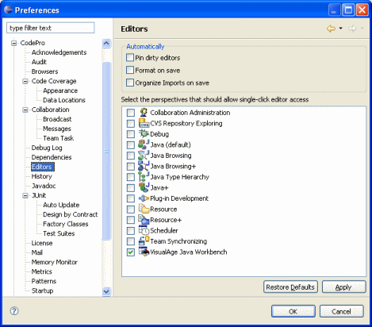

Preferences - Editors

This page is used to control various CodePro editor options.
Pin dirty editors
When single-click editing is effect (standard within the VisualAge Java Workbench
perspective), clicking on a type will change the contents of the current code editor to
reflect the new selection. If an editor is "pinned", a new editor is opened
rather than changing the contents of the existing editor. If an editor is
"dirty" (e.g., there are unsaved changes), normally the user will be presented
with a "Save Changes?" dialog where they are given the opportunity to save
changes before the contents of the editor are changed. With this option in effect, dirty
editors are automatically considered "pinned" and their contents will not be
replaced and no question will be asked of the user.
Format on save
This options determines whether Java source is automatically formatted during the
save
process.
Organize Imports on save
This options determines whether imports are automatically organized during the
save
process.
Show task list if errors
This option determines whether the standard task view will be automatically brought to
the front any time a compilation error is encountered when saving a Java type.
This option is only available under Eclipse 2.0 and Application Developer
5.0.
Save all editors
This option determines whether the open editors will be saved automatically on a
user-specified schedule (default is every ten minutes). Note that this option schedules a
special system task to run at the specified interval. This feature is only available
under Eclipse 2.0 and Application Developer 5.0.
Single-click editor access
This checkbox list is used to specify which perspectives should have single-click
editor access enabled for them. This is on by default for the VisualAge Java Workbench
perspective. When single-click editing is in effect, clicking on a type will change the
contents of the current code editor to reflect the new selection. Holding down the ALT key
when you single click will open the file in a new editor rather than reusing an existing
editor. |